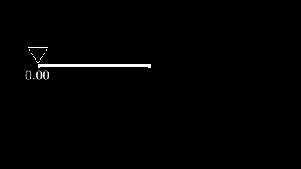
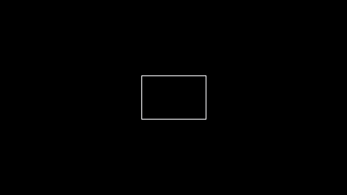
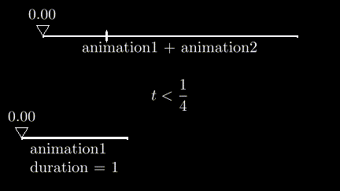

How does Lanim work?
In this tutorial, we’re going to create an animated slider. You will learn how Lanim works under the hood along the way.

1. So what is an animation?
If you open the source code of the Animation class
and remove all the noise, this is what it is:
class Animation(Generic[A]):
duration: float
projector: Callable[[float], A]
Note
If you’re not familiar with type annotations
(the stuff after :), just ignore them.
An animation consists of a duration (in seconds) and some function. We’ll see what this function does in just a moment.
2. Let’s write an animation from scratch
Type this code into a file, e.g. how_does.py:
from lanim.core import Animation
from lanim.pil import Rect
def projector(t):
return Rect(x=0, y=0, width=3, height=2 + t*4)
export = Animation(duration=5.0, projector=projector)
python -m lanim -o how_does.mp4 how_does
You should see this:

The “projector” thing works as follows: lanim will call the projector
of an animation with increasing values of t: 0.0, 0.01, 0.02, …, and finally 1.0.
While doing so, it records all the frames (in this case, Rect objects) and
renders them as images with the pillow library.
That’s it — no tricks up my sleeve.
3. Using standard functions
from lanim.core import Animation
from lanim.pil import Rect
def projector1(t):
side = 2 + t*3
return Rect(x=0, y=0, width=side, height=side)
animation1 = Animation(duration=1.0, projector=projector1)
def projector2(t):
side = 5
return Rect(x=t*4, y=0, width=side, height=side)
animation2 = Animation(duration=3.0, projector=projector2)
export = animation1 + animation2

The sum animation works in the same way: it receives a t ranging from 0 to 1, and it
returns something renderable. It does so by picking one of the animations and adjusting
the t value. For example, like this:
def export_projector(t):
if t < 1/4:
local_t = t * 4
return projector1(local_t)
else:
local_t = (t - 1/4) * (4/3)
return projector2(local_t)
export = Animation(1.0 + 3.0, export_projector )

from functools import reduce
from lanim.core import Animation
from lanim.pil import lrpair_longest, Align, Group, Latex, Rect, Triangle
def slider(x1: float, x2: float, message: str, t: float):
slider_xpos = x1*(1-t) + x2*t
bar = Rect(
x=(x1 + x2)/2, y=0,
width=x2 - x1, height=0.03,
line_width=2
)
pointer = Triangle(
x=slider_xpos, y=-0.3,
dx1=-0.3, dy1=-0.2,
dx2=+0.3, dy2=-0.2,
dx3=0, dy3=+0.3
)
progress = Latex(
x=slider_xpos, y=-0.7, source=f"${t:.2f}$", align=Align.CD
).scaled(0.5)
sign = Latex(
x=(x1 + x2)/2, y=0.2,
source=message, align=Align.CU
).scaled(0.5)
return Group([bar, pointer, progress, sign])
def big_slider(t: float):
slider_ = slider(-6, 6, "animation1 + animation2", t).moved(dx=0, dy=-2.8)
notch = Rect(x=-3, y=-2.8, width=0.02, height=0.55, line_width=2)
return Group([slider_, notch])
def left_slider(t: float):
return slider(-7, -2, "animation1\n\nduration = 1", t).moved(dx=0, dy=2)
def right_slider(t: float):
return slider(2, 7, "animation2\n\nduration = 3", t).moved(dx=0, dy=2)
def total_slider(t: float):
if t < 1/4:
return left_slider(t*4)
else:
return right_slider((t - 1/4) * (4/3))
def conditional(t: float):
if t < 1/4:
return Latex(x=0, y=0, source=r"$t < \dfrac{1}{4}$").scaled(0.5)
else:
return Latex(x=0, y=0, source=r"$t \ge \dfrac{1}{4}$").scaled(0.5)
export = reduce(lrpair_longest, (
Animation(10, total_slider),
Animation(10, big_slider),
Animation(10, conditional),
))
With some simple maths, you can do what + does like so:
def plus(animation1, animation2):
total_duration = animation1.duration + animation2.duration
ratio = animation1.duration / total_duration
def projector(t):
if t < ratio:
return animation1.projector(t / ratio)
else:
return animation2.projector((t - ratio) / (1 - ratio))
return Animation(total_duration, projector)
4. Making the slider
At the start, I promised that we’re going to make a slider animation.
A slider will consist of two things: a bar and a triangle that moves along that bar.
We’ll make a function that accepts some parameters and returns a Pair object.
Here, x and y are the center of our slider, width is the width of the slider,
and t is the progress — a value from 0 to 1 that tells where on the slider
the triangle should be.
from lanim.pil import Pair, Rect, Triangle
def make_slider(x, y, width, t):
bar = Rect(x=x, y=y, width=width, height=0.05, line_width=4)
triangle = Triangle(
x=x - width/2 + t*width, y=y-0.6,
dx1=-0.5, dy1=-0.35,
dx2=0.5, dy2=-0.35,
dx3=0, dy3=0.5,
)
return Pair(bar, triangle)
For the bar, we’ll use a very thin rectangle with a big line thickness.
from lanim.pil import Pair, Rect, Triangle
def make_slider(x, y, width, t):
bar = Rect(x=x, y=y, width=width, height=0.05, line_width=4)
triangle = Triangle(
x=x - width/2 + t*width, y=y-0.6,
dx1=-0.5, dy1=-0.35,
dx2=0.5, dy2=-0.35,
dx3=0, dy3=0.5,
)
return Pair(bar, triangle)
The Triangle class accepts the starting position (x, y) and three pairs
(dx1, dy1), (dx2, dy2), (dx3, dy3) telling how far apart each of the
three points is from (x, y).
For the x position, we will choose a value that depends on t. This is what’s
going to make the slide animated.
from lanim.pil import Pair, Rect, Triangle
def make_slider(x, y, width, t):
bar = Rect(x=x, y=y, width=width, height=0.05, line_width=4)
triangle = Triangle(
x=x - width/2 + t*width, y=y-0.6,
dx1=-0.5, dy1=-0.35,
dx2=0.5, dy2=-0.35,
dx3=0, dy3=0.5,
)
return Pair(bar, triangle)
Finally, we bundle the bar and the triangle into a pair and return it.
from lanim.pil import Pair, Rect, Triangle
def make_slider(x, y, width, t):
bar = Rect(x=x, y=y, width=width, height=0.05, line_width=4)
triangle = Triangle(
x=x - width/2 + t*width, y=y-0.6,
dx1=-0.5, dy1=-0.35,
dx2=0.5, dy2=-0.35,
dx3=0, dy3=0.5,
)
return Pair(bar, triangle)
5. Testing the slider
Let’s make a helper function that will act the projector. Then you can run the animation.
from lanim.core import Animation
from lanim.pil import Pair, Rect, Triangle
def make_slider(x, y, width, t):
bar = Rect(x=x, y=y, width=width, height=0.05, line_width=4)
triangle = Triangle(
x=x - width/2 + t*width, y=y-0.6,
dx1=-0.5, dy1=-0.35,
dx2=0.5, dy2=-0.35,
dx3=0, dy3=0.5,
)
return Pair(bar, triangle)
def projector(t):
return make_slider(x=-3, y=-1, width=6, t=t)
export = Animation(6.0, projector)

6. Attaching a number to the triangle
In the previous animation, the slider had a varying number attached to it. Let’s implement that as well.
First, let’s extract the x-coordinate of the slider into a variable.
def make_slider(x, y, width, t):
bar = Rect(x=x, y=y, width=width, height=0.05, line_width=4)
slider_xpos = x - width/2 + t*width
triangle = Triangle(
x=slider_xpos, y=y-0.6,
dx1=-0.5, dy1=-0.35,
dx2=0.5, dy2=-0.35,
dx3=0, dy3=0.5,
)
return Pair(bar, triangle)
Then, let’s add a Latex object with the number we want. The :.2f modifier
formats a float with two decimal places.
def make_slider(x, y, width, t):
bar = Rect(x=x, y=y, width=width, height=0.05, line_width=4)
slider_xpos = x - width/2 + t*width
label = Latex(x=slider_xpos, y=y+0.5, source=f"${t:.2f}$").scaled(0.5)
triangle = Triangle(
x=slider_xpos, y=y-0.6,
dx1=-0.5, dy1=-0.35,
dx2=0.5, dy2=-0.35,
dx3=0, dy3=0.5,
)
return Pair(bar, triangle)
Here’s the issue: a pair only accepts two values, but we need three.
from lanim.pil import Pair, Rect, Triangle, Latex
def make_slider(x, y, width, t):
bar = Rect(x=x, y=y, width=width, height=0.05, line_width=4)
slider_xpos = x - width/2 + t*width
label = Latex(x=slider_xpos, y=y+0.5, source=f"${t:.2f}$").scaled(0.5)
triangle = Triangle(
x=slider_xpos, y=y-0.6,
dx1=-0.5, dy1=-0.35,
dx2=0.5, dy2=-0.35,
dx3=0, dy3=0.5,
)
return Pair(bar, triangle)
Solution: place the pair inside another pair
def make_slider(x, y, width, t):
bar = Rect(x=x, y=y, width=width, height=0.05, line_width=4)
slider_xpos = x - width/2 + t*width
label = Latex(x=slider_xpos, y=y+0.5, source=f"${t:.2f}$").scaled(0.5)
triangle = Triangle(
x=slider_xpos, y=y-0.6,
dx1=-0.5, dy1=-0.35,
dx2=0.5, dy2=-0.35,
dx3=0, dy3=0.5,
)
return Pair(label, Pair(bar, triangle))
Now let’s run the code:
The code so far
from lanim.core import Animation
from lanim.pil import Pair, Rect, Triangle, Latex
def make_slider(x, y, width, t):
bar = Rect(x=x, y=y, width=width, height=0.05, line_width=4)
slider_xpos = x - width/2 + t*width
label = Latex(x=slider_xpos, y=y+0.5, source=f"${t:.2f}$").scaled(0.5)
triangle = Triangle(
x=slider_xpos, y=y-0.6,
dx1=-0.5, dy1=-0.35,
dx2=0.5, dy2=-0.35,
dx3=0, dy3=0.5,
)
return Pair(label, Pair(bar, triangle))
def projector(t):
return make_slider(x=-3, y=-1, width=6, t=t)
export = Animation(6.0, projector)
7. Using a Group
If you have more than 2 or 3 elements, nested pairs become inconvenient.
Group is a generalization of Pair — it can hold any number of elements
def make_slider(x, y, width, t):
bar = Rect(x=x, y=y, width=width, height=0.05, line_width=4)
slider_xpos = x - width/2 + t*width
label = Latex(x=slider_xpos, y=y+0.5, source=f"${t:.2f}$").scaled(0.5)
triangle = Triangle(
x=slider_xpos, y=y-0.6,
dx1=-0.5, dy1=-0.35,
dx2=0.5, dy2=-0.35,
dx3=0, dy3=0.5,
)
return Group([bar, label, triangle])
Recap
Now you know that:
- An animation consists of a duration and a projector
- A projector is a function taking a number from 0 to 1 and returning an animation frame
And now you can:
- Write an animation by constructing an
Animationobject yourself - Animate a structure made up of multiple elements